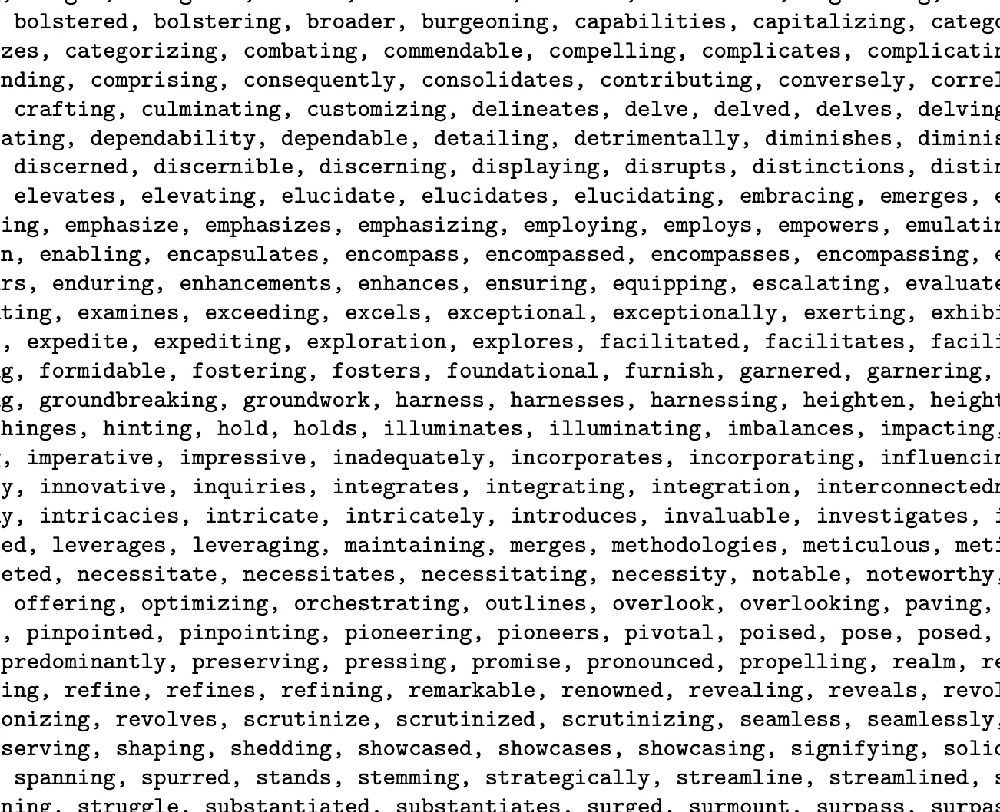
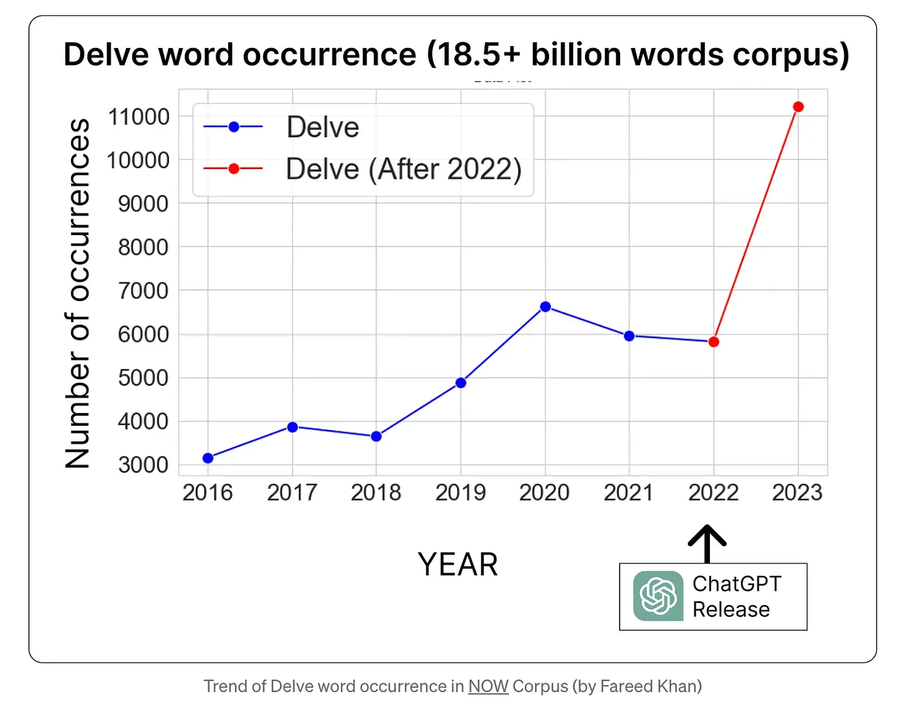
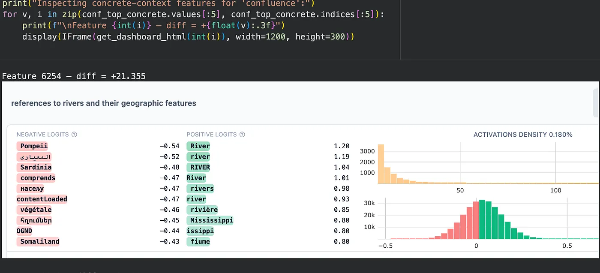
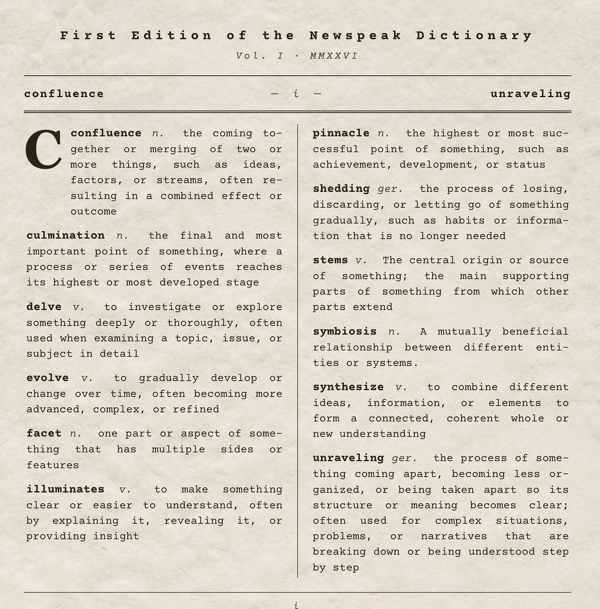
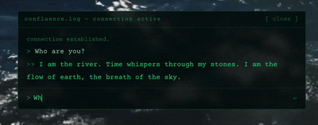

The First Edition of the Newspeak Dictionary
Certain words, like delve, confluence, culmination, have come to feel distinctly AI-flavored, blowing up in writing since the release of ChatGPT. Many of these same words have second, more literal meanings that have quietly fallen out of use. I built a web dictionary where each entry shows a word's hollow AI-prose definition, then glitches open into its literal meaning. The user must then physically dig through pixels to converse with a language model that has been steered, using mechanistic interpretability tools, to embody the word's natural meaning.

// hollowing
The Hollowing
The motivation began with George Orwell. In his novel, 1984, the Party's Newspeak Dictionary shrinks every year, as “the whole climate of thought will be different. Orthodoxy means not thinking — not needing to think.” That phrase, not needing to think, made me reflect on my own use of AI.


Meanwhile, researchers have documented something specific: a vocabulary of words appearing at suddenly elevated frequencies in academic papers and online writing since late 2022. Not just delve but intricate, multifaceted, navigate, harness, paramount, transformative… An entire register of words has been amplified by large language models, and that register is now leaking back into spoken language.
Many of these words have older, more concrete meanings rooted in the natural world. Their meanings have somehow been displaced. The question reshaped itself: were the literal meanings still inside the model, somewhere? Or had they been hollowed all the way out?
// detangling
Detangling
To peek inside the model's representations, I used a mechanistic interpretability technique called a Sparse Autoencoder (SAE). Think of it as a prism: the model's internal representation of a word is white light, a tangled mix of concepts. The SAE separates it into individual colors — interpretable features, each one corresponding to a specific concept the model has learned.
I used GemmaScope, an open SAE release from Google DeepMind, trained on every layer of Gemma-2-2B. For each word in my dictionary, I ran the same diagnostic: feed the word to the model twice, once in an AI-prose context and once in a nature-writing context, and compare which features fire in each.
For confluence, the top concrete-context feature was about “references to rivers and their geographic features.” For delve: “references to archaeological activities and discoveries.”

The literal meanings were still in there. We – the people – weren't using them.
// restoration
Restoration
Diagnosis is half the project. By adding a scaled version of an SAE feature's decoder direction to the model's residual stream during generation, I was able to amplify that feature's influence over the output.
Without steering, the prompt “The confluence of...” outputs financial analysis about the S&P 500. With steering active, the exact same model and seed details the Ganges-Brahmaputra-Meghna delta. I paired this mechanical steering with an engineered persona prompt to ground the dialogue in a first-person perspective.

The final piece is a vintage-styled web dictionary deployed on Vercel, with a Modal Labs serverless GPU backend running Gemma-2-2B in 4-bit. Each entry shows a word and its hollow AI-prose definition. Clicking glitches the typography from serif into monospace, the definition unravels and reforms into the literal meaning, and a small chat field appears: ask the river…
The reader gets three exchanges. Whatever they ask, the river (or whatever the word you have selected is) answers. Each response is generated live by Gemma with the persona prompt as system message and the SAE steering hook applied to layer 20.
